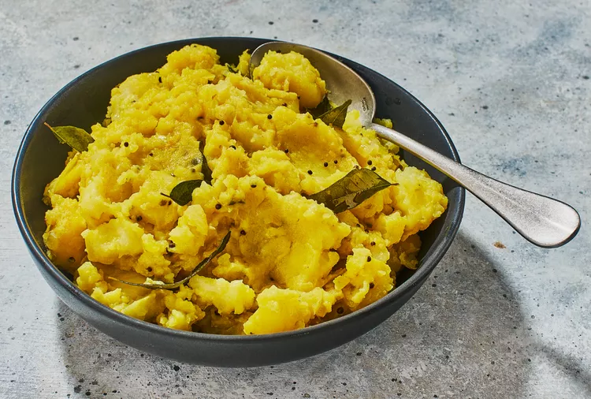

Golden spiced potatoes are enriched with ghee and scented with floral, citrusy curry leaves.
Filled with earthy spices and plenty of flavor, aloo masala is a warm dish of potatoes enriched with ghee and scented with floral, citrusy curry leaves. A staple at many South Indian tables, aloo masala is the key filling in masala dosa and is paired with condiments such as coconut chutney.
Bring potatoes, 4 cups water, 2 teaspoons salt, and turmeric to a boil in a pot over high. Cover and reduce heat to medium-low; simmer, undisturbed, until potatoes are very tender, 30 to 35 minutes. Stir in chile and ginger; remove from heat. Cover and let stand 15 to 20 minutes.
Melt ghee in a large skillet over medium. Add onion, curry leaves, and mustard seeds; cook, stirring occasionally, until onion is translucent, about 6 minutes. Remove from heat. Transfer potatoes to onion mixture using a slotted spoon. Add remaining 1 teaspoon salt; stir until potatoes begin to break down into a coarse, mashed consistency.